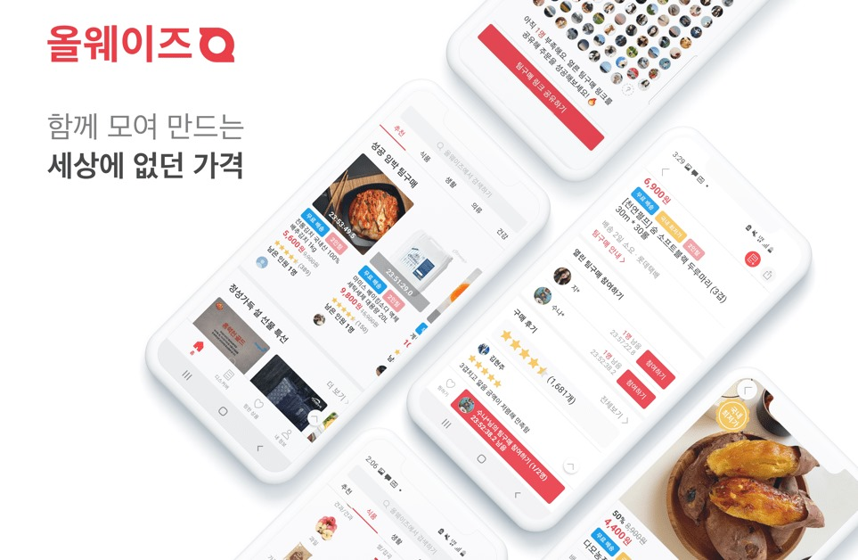

HTML이란 무엇인가?
내가 SNS에 글을 쓰고, 배운 것과 생각한 것을 공유하는 이유는 self motivation을 하기 위함도 있지만, 그것보다도 중요하게 생각하는 건 '나와 비슷한 사람들을 끌어당기기 위함'이다. 다소 긴 글을 작성하면 대부분은 보지 않는다. 그러나 '나와 가치 공유를 하는 사람들'은 글을 끝까지 읽는다. 나또한 대부분의 책 리뷰와 광고를 위한 글들은 그냥 스킵 하지만, 이 사람이 목표하는 바가 나와 비슷하다는 생각이 들면 아무리 긴 글이라도 읽고 댓글을 달거나 팔로우를 건다. 단순히 인프라를 늘리기 위함보단, 실제로 그 사람을 통해 영감을 얻었고 성장을 위한 윈-윈 관계가 될 것이라 생각하기 때문이다. 원래 SNS로 인한 시간 낭비가 크다 생각했었기에 비공개 계정으로 전환하고 가끔 스토리를 올렸지만, 생각이 바뀌었다. 뛰어난 사람들을 만날 수 있는 창구로 SNS가 훌륭하게 일을 수행해 주고 있었기 때문이다. 어떻게 보면 그저 허울뿐인 비즈니스 관계를 만든다고 생각할 순 있지만, 이 세상에 비즈니스가 아닌 관계는 가족 관계밖에 없다고 생각한다. 서로 만났는데 아무것도 얻어 가는 게 없고 그저 술만 마시며 남 얘기만 하는 관계보단 훨씬 이롭고 건강하다.
